A lightweight, transparent web UI for managing ZFS pools, datasets, snapshots, replication, and system observability. No database required -- direct system integration.
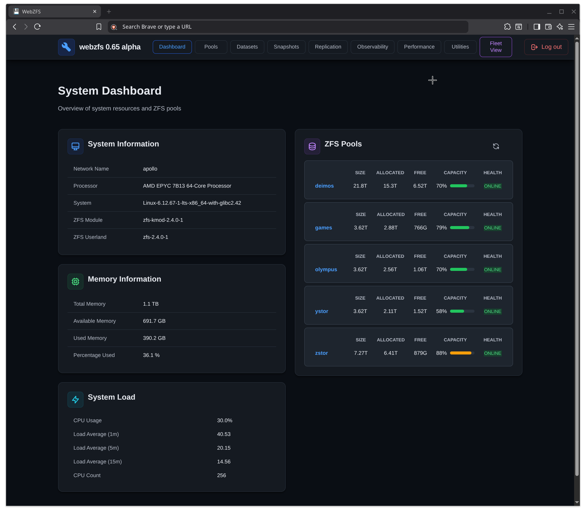
A complete toolkit for ZFS administration, monitoring, and maintenance -- all from your browser.
System overview with pool health, capacity, CPU, memory, and ZFS ARC statistics at a glance.
Create, import, export, and scrub pools. View detailed status, properties, and vdev topology.
Manage filesystems and volumes. Create, rename, mount/unmount, and configure properties.
Create, rollback, clone, rename, and diff snapshots. Full Sanoid integration for automated policies.
Native ZFS send/receive and Syncoid integration. Local and remote replication with full job management.
Pool history, system events, kernel debug logs, and ZFS module parameters in one place.
Real-time pool I/O statistics, ARC hit rates, ZFS process monitoring, and capacity analysis.
Shell terminal, file browser, text editor, SMART monitoring, SSH manager, scrub scheduling, and more.
Monitor multiple ZFS servers from a single dashboard. SSH-based remote pool overview and health checks.
The Dashboard provides a centralized system overview, giving you immediate visibility into the health and status of your ZFS infrastructure.
Full lifecycle management of your ZFS storage pools. Create new pools, import existing ones, monitor health, and perform maintenance -- all through an intuitive interface.
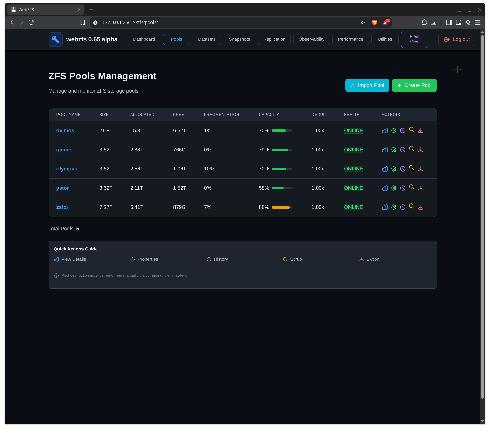
Drill into any pool to see comprehensive information, including status, properties, I/O stats, and full command history.
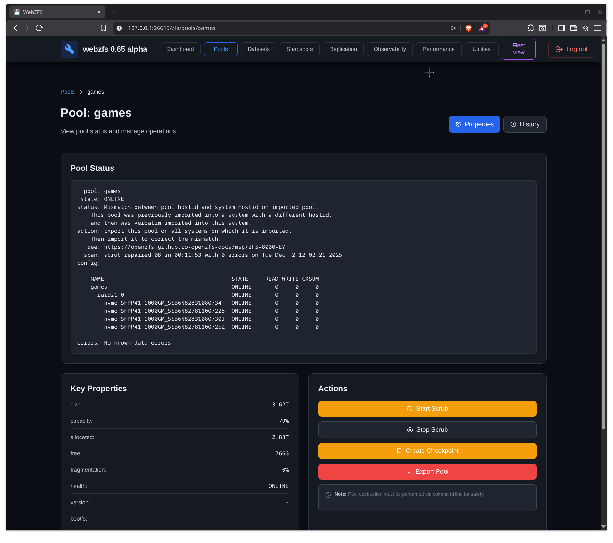
Manage ZFS filesystems and volumes with full property control. Create new datasets, adjust quotas and reservations, and manage mount points.
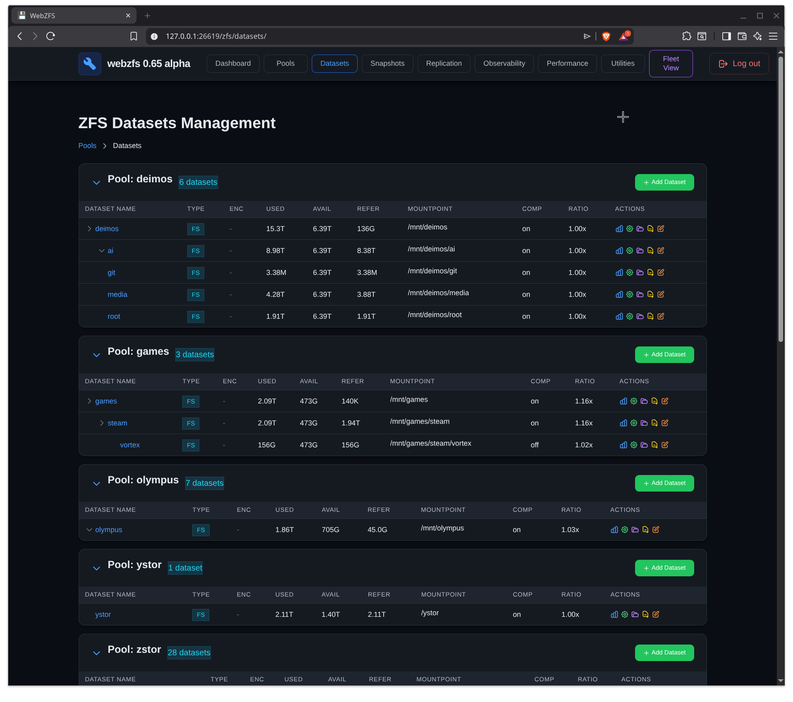
Complete snapshot lifecycle management with support for both manual operations and automated policies via Sanoid integration.
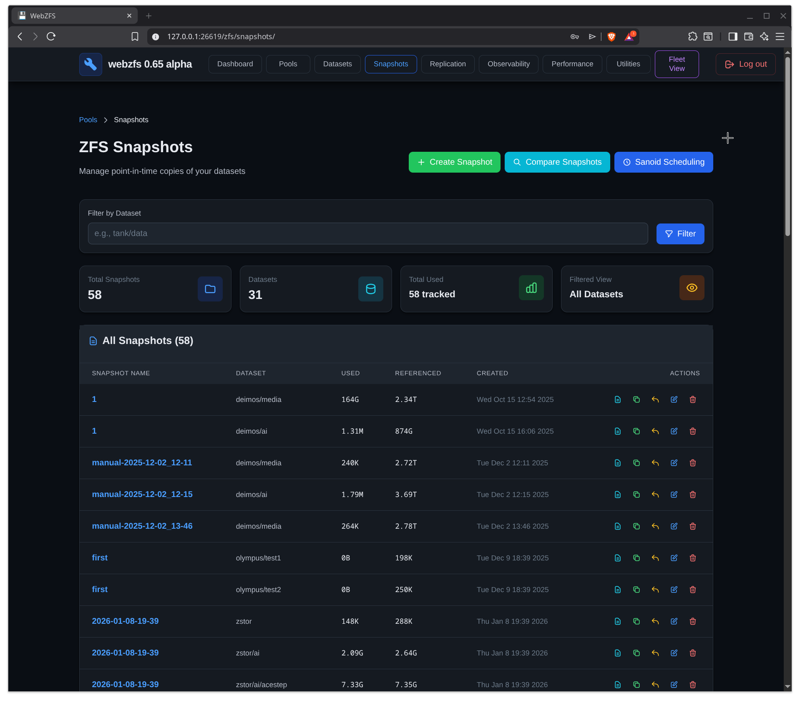
Automated snapshot management through Sanoid. Configure retention policies, view scheduled snapshots, and manage pruning from the web interface.
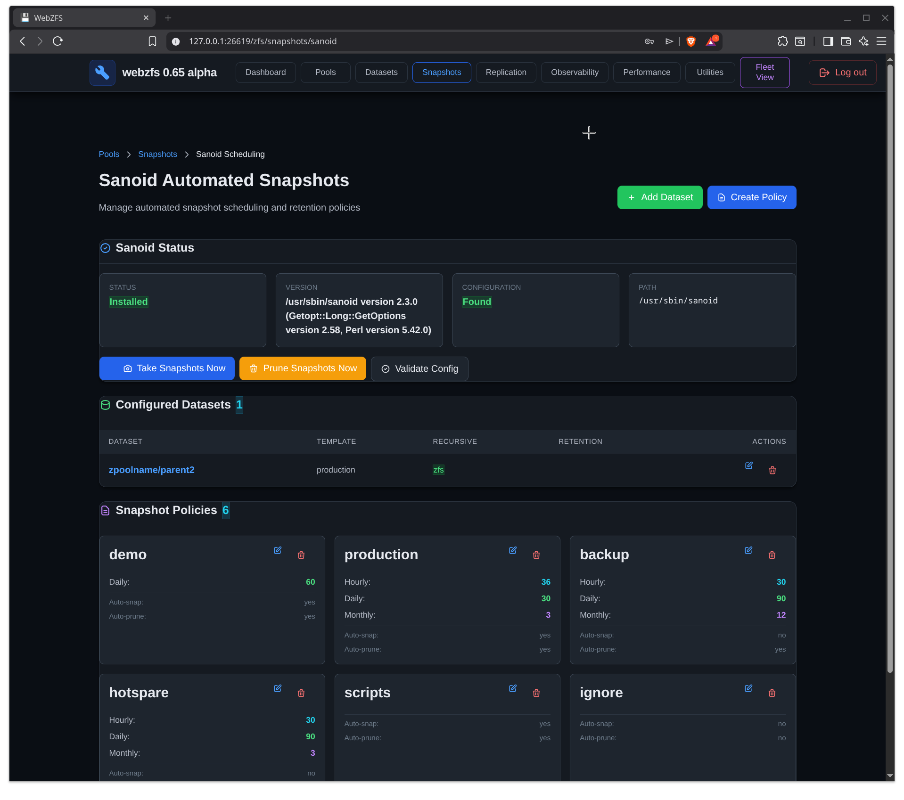
Configure and manage ZFS replication jobs using native send/receive or Syncoid. Supports both local and remote replication targets with SSH transport.
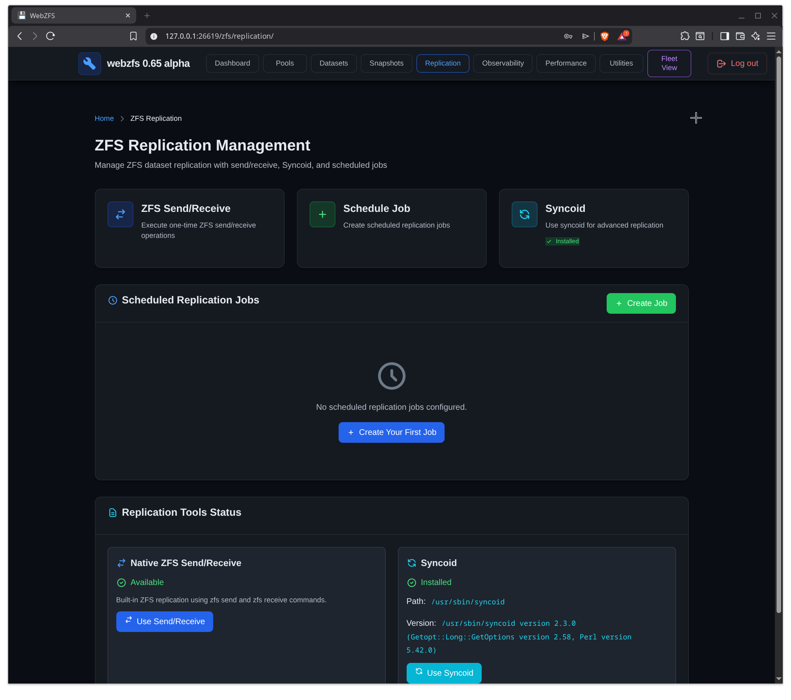
Deep visibility into your ZFS subsystem with access to pool history, system events, kernel debug logs, and tunable module parameters.
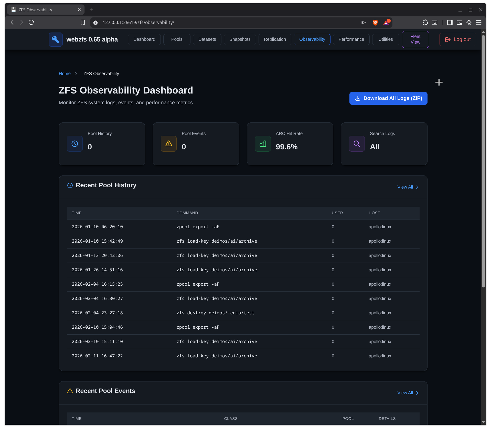
Real-time performance metrics for your ZFS storage. Monitor I/O throughput, latency, ARC efficiency, and running ZFS processes.
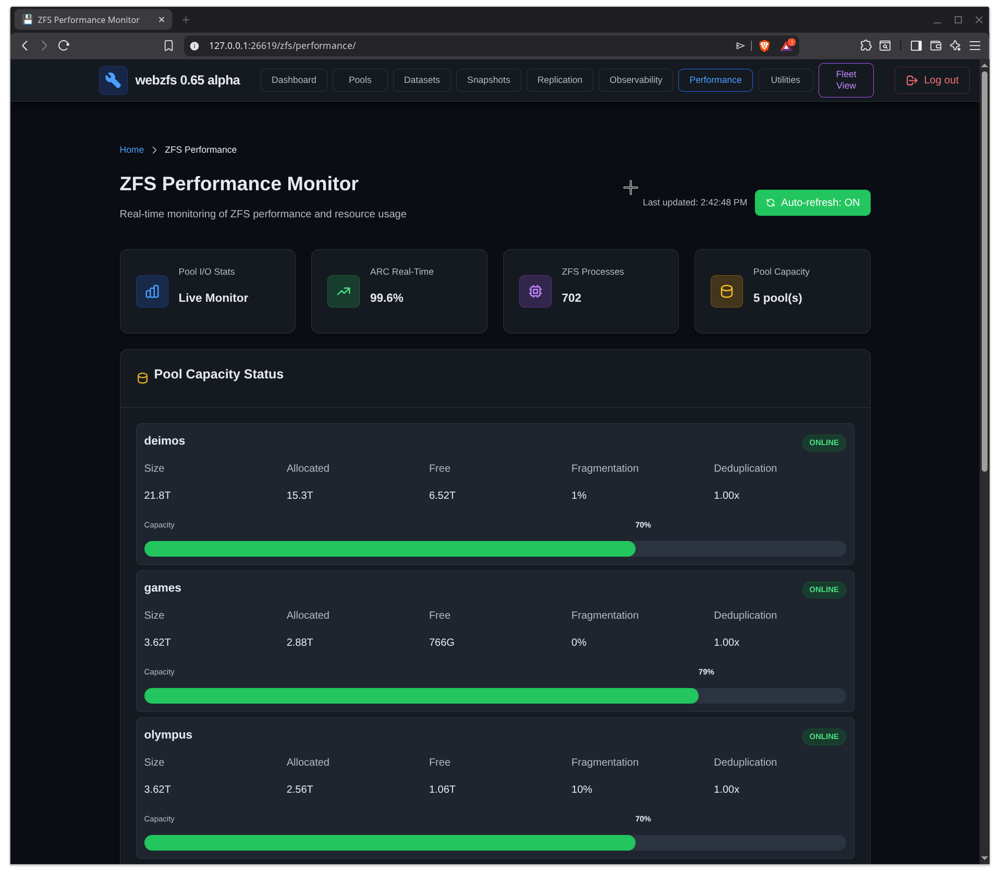
A comprehensive set of system administration tools accessible from the web interface. Manage files, monitor disk health, schedule maintenance, and more.
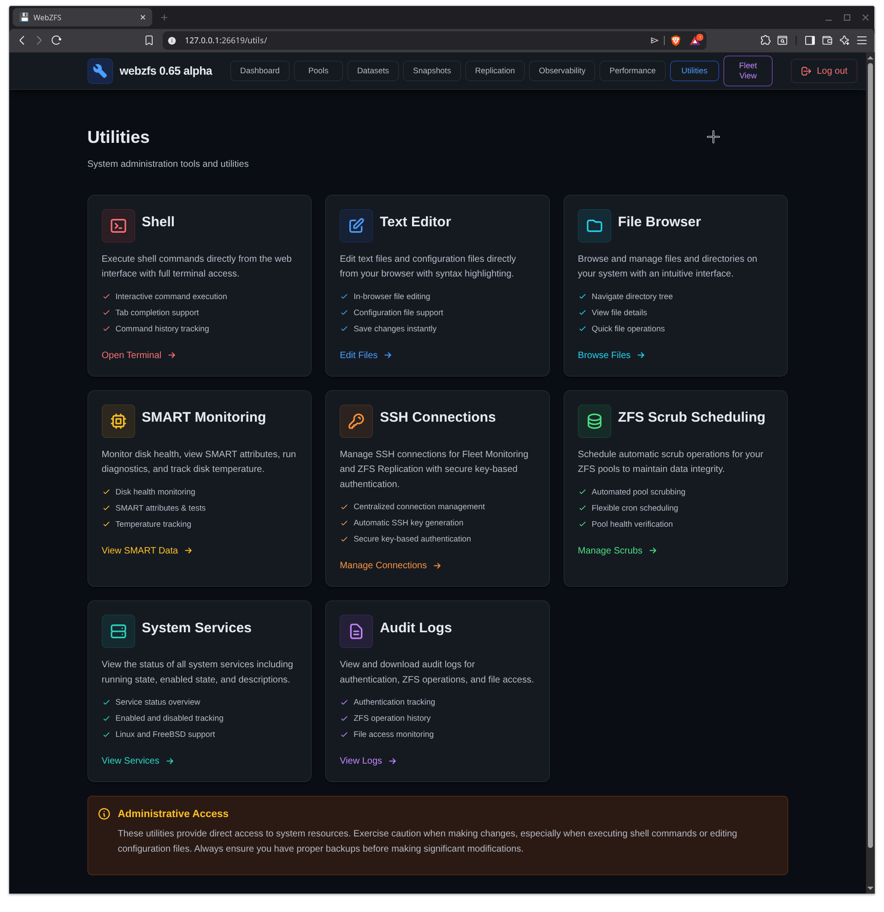
Monitor multiple ZFS servers from a single interface. Add remote servers via SSH and get a unified view of pool health, capacity, and status across your infrastructure.
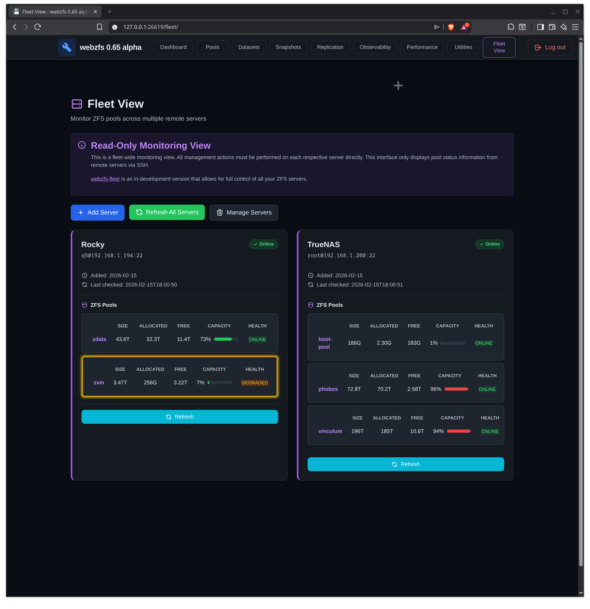
WebZFS runs on the major operating systems that support OpenZFS.
Full support for any distribution running OpenZFS. Tested on Ubuntu, Debian, Fedora, Arch, and more.
Full support for FreeBSD 13.x and later with native ZFS. PAM authentication runs as root.
Partial support with OpenZFS. Core features operational, platform-specific features in progress.
Get WebZFS running in minutes with the automated installer.
Direct system integration with zero persistent storage overhead
Uses your existing system accounts -- no separate user management
Binds to 127.0.0.1 by default for security-first operation
Secure remote access via SSH port forwarding
# Clone the repository git clone https://github.com/webzfs/webzfs.git cd webzfs # Linux installation sudo bash install_linux.sh # FreeBSD installation sudo bash install_freebsd.sh # Access via SSH tunnel (recommended for remote) ssh -L 26619:127.0.0.1:26619 user@your-server # Then open in browser http://127.0.0.1:26619